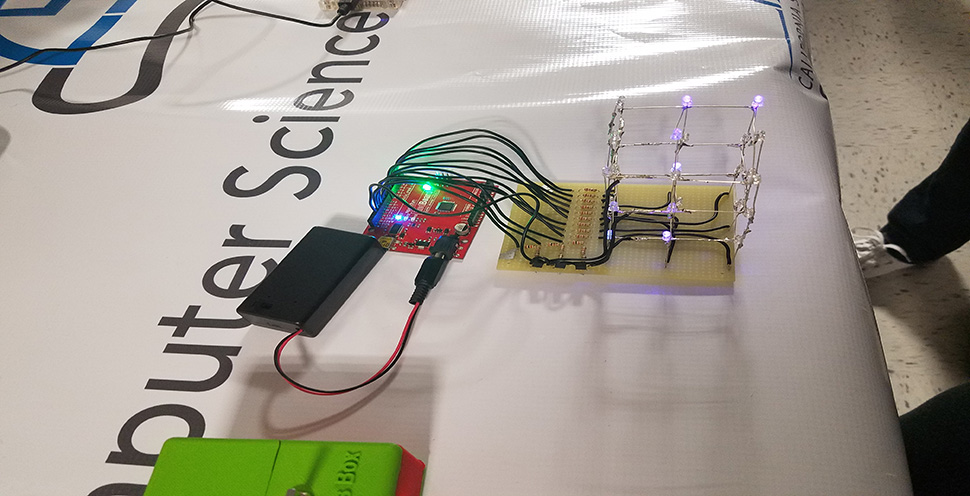

<div id="single-portfolio">
	<div id="portfolio-details" class="container">
		<a class="close-folio-item" href="#"><i class="fa fa-times"></i></a>
		
		<div class="row">
			<div class="col-sm-9">
				<div class="project-info">
					<h3>CSUSB Cyber Security Open House</h3>
					<p>Members met at Cal State San Bernandino's Open House of their cybersecurity program. It was very informative and demonstrated the capabilities of the two computer science clubs at CSUSB: the <a href="https://www.infosec-csusb.org/">Information Security Club</a> and the <a href="https://cse-csusb.org/">Computer Science & Engineering Club.</a></p>
					<p>While many of our members are programming majors, several are looking at CSUSB for their cybersecurity program and/or cybersecurity as a future career. At the same time, our own campus is developing a cybersecurity program that will begin as a certification and hopefully eventually develop into a transfer program into CSUSB and other schools offering cybersecurity as a major.</p>
				</div>
			</div>
			<div class="col-sm-3" style="padding-left:15px;padding-right:15px;">
				<div class="project-details">
					<h3>Event Details</h3>
					<p>For: Prospective Students</p>
					<p>Date: 21 Oct 2016</p>
					<p>Tag: Computer Science, Cyber Security, Events</p>
				</div>  
			</div>
		</div>
	</div>
</div>